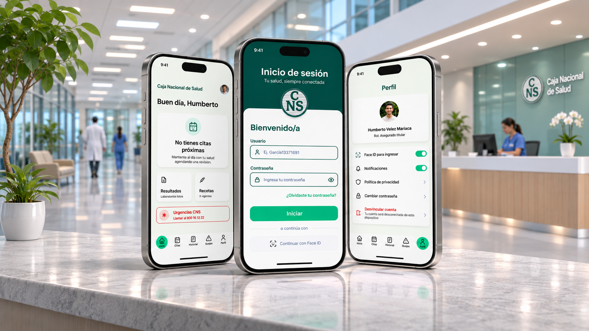
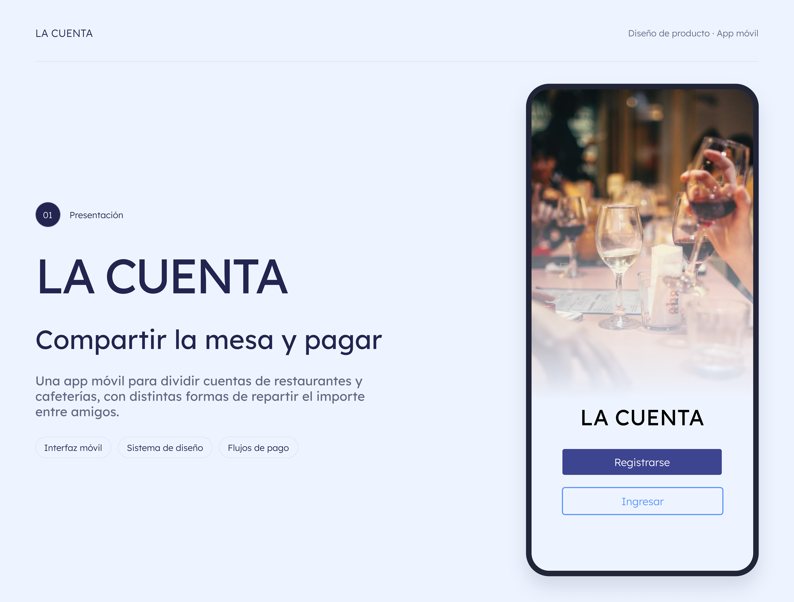

Landing Page — Pizzería
Ejercicio práctico de desarrollo web para reforzar HTML, CSS y JavaScript con una página responsiva que organiza la propuesta de valor, los sabores destacados, el equipo y el contacto directo en un recorrido claro.

UI/UX Designer & Frontend Developer
Diseño experiencias digitales que combinan la belleza visual con la funcionalidad técnica. Del wireframe al código, creo interfaces que conectan con las personas y potencian los negocios.
Tres disciplinas complementarias que trabajan juntas para entregar soluciones digitales completas y de alto impacto.
Creo interfaces intuitivas centradas en el usuario. Desde la investigación y arquitectura de información hasta wireframes, prototipos interactivos y sistemas de diseño escalables en Figma.
Transformo diseños en experiencias web funcionales y de alto rendimiento. Trabajo con HTML semántico, CSS avanzado y JavaScript Vanilla para construir interfaces accesibles y responsive.
Utilizo herramientas de análisis web y marketing digital para optimizar la presencia en línea de los proyectos. Implemento estrategias basadas en datos para mejorar la visibilidad, el engagement y la conversión.
Ejercicio práctico de desarrollo web para reforzar HTML, CSS y JavaScript con una página responsiva que organiza la propuesta de valor, los sabores destacados, el equipo y el contacto directo en un recorrido claro.

Caso de estudio UX/UI para la Caja Nacional de Salud en La Paz. Rediseño digital enfocado en reservar citas médicas en menos de 3 minutos mediante metodología C.L.E.A.R. UI y Design Tokens en Figma.

App móvil para compartir la mesa y dividir cuentas de restaurantes y cafeterías, con distintas formas de repartir el pago (equitativo, por consumo o ruleta), cobro por QR y comprobante digital.

Plataforma web cultural diseñada para conectar a las personas con la agenda de eventos artísticos, música, danza, teatro, artistas y espacios patrimoniales en un solo punto de encuentro digital.

Plataforma web y blog sobre cultura cafetera con artículos, recetas, talleres prácticos y formulario de contacto, maquetada para reforzar HTML5 semántico, CSS3 y Responsive Design.

Tienda virtual de poleras para desarrolladores («Código de Estilo») creada para reforzar maquetación con HTML semántico, CSS Grid, Flexbox y Responsive Design en catálogo de productos y secciones informativas.
Un flujo de trabajo estructurado y Mobile-First que garantiza resultados consistentes desde la investigación hasta el producto final en producción.
Inicio con investigación profunda del usuario y del negocio. Entrevistas, benchmarking y análisis heurístico para entender el problema antes de diseñar cualquier solución.
Estructuro el flujo de información con arquitectura de información, mapas de sitio y wireframes de baja fidelidad. Priorizando la usabilidad y la jerarquía visual.
Construyo el sistema de diseño visual: tipografía, paletas de color, componentes reutilizables y guías de estilo que garantizan consistencia en toda la interfaz.
Desarrollo el frontend con HTML semántico, CSS avanzado y JavaScript aplicando principios Mobile-First. El diseño toma vida con animaciones y microinteracciones.
Tests con usuarios reales, análisis de accesibilidad WCAG y optimización de rendimiento. Iteración continua para perfeccionar la experiencia hasta superar las expectativas.